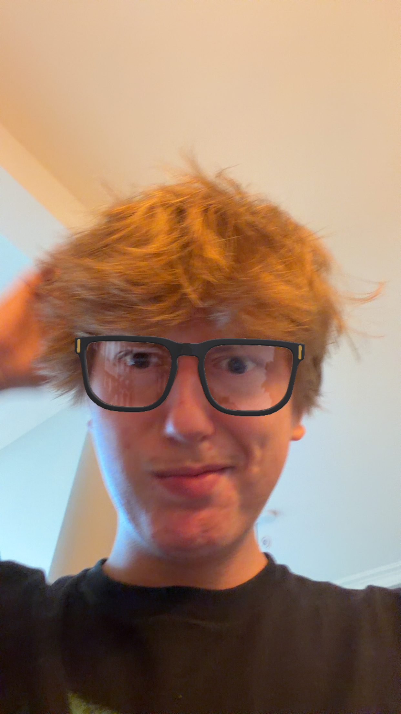

Over mij
Mijn naam is Jasper Van Laere en ik ben student Graduaat Programmeren bij Thomas More De Nayer.
In het middelbaar behaalde ik een diploma Elektriciteit. Ik ben geïnteresseerd in technologie, computers en webdesign.
Graduaat Programmeren - Thomas More De Nayer

Mijn naam is Jasper Van Laere en ik ben student Graduaat Programmeren bij Thomas More De Nayer.
In het middelbaar behaalde ik een diploma Elektriciteit. Ik ben geïnteresseerd in technologie, computers en webdesign.